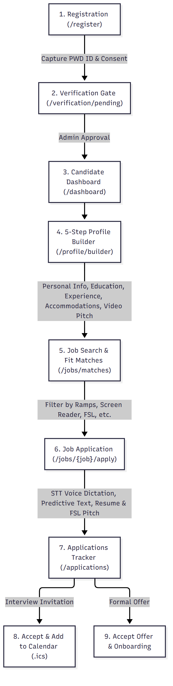
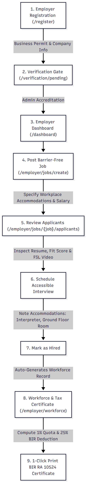
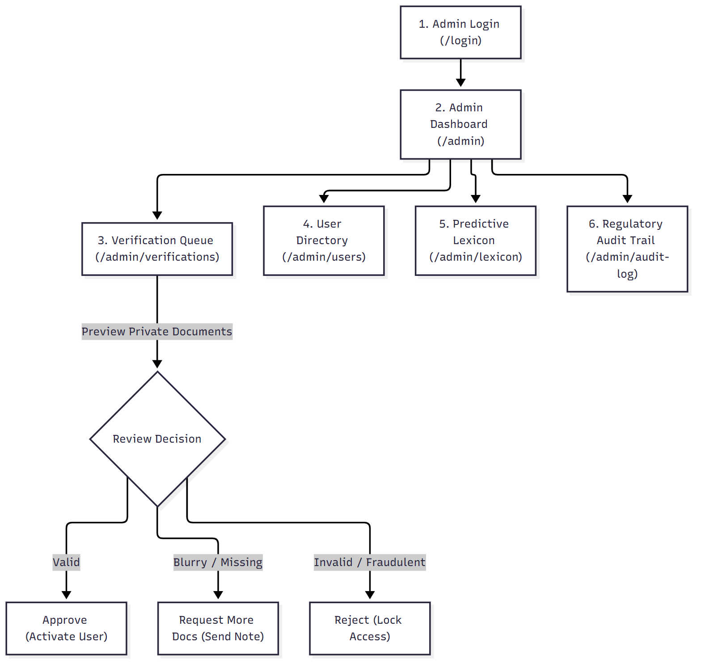

This document outlines the complete, production-grade workflows of the PWD-E Platform across all three core user roles: Candidate (Persons with Disabilities), Employer, and System Administrator (PESO / LGU Compliance Officer).
| Role | Primary Objectives | Key Routes & Components | Regulatory Authority |
|---|---|---|---|
| Candidate (PWD) | Register with PWD ID, build accessible profile, search accommodation-filtered jobs, apply via STT/FSL, track hiring status. | /register/profile/builder/jobs/matches/jobs/{job}/apply/applications |
RA 7277 (Magna Carta for Disabled Persons) RA 10754 (PWD Benefits) RA 11106 (Filipino Sign Language Act) RA 10173 (Data Privacy Act) |
| Employer | Register business entity, post accessible opportunities, review applicants, schedule accommodations, hire talent, claim statutory tax incentives. | /register/employer/jobs/employer/jobs/create/employer/jobs/{job}/applicants/employer/workforce |
RA 10524 (Positions Reserved for PWDs) BIR RA 10524 / RA 7277 §8 (25% gross wage deduction & 50% accessibility deduction) |
| Administrator (PESO / LGU) | Review statutory KYC credentials (PWD ID & Business Permit), monitor compliance, manage predictive assistive lexicon, inspect audit logs. | /admin/admin/verifications/admin/users/admin/lexicon/admin/audit-log |
DOLE PESO Accreditation NCDA / PDAO Guidelines |

/register and selects Candidate (PWD).pending status. Intercepted by EnsureAccountVerified middleware.pending, needs_more_docs, rejected) with administrative reviewer feedback./profile/builder):
validateStep() to prevent incomplete profiles./jobs & /jobs/matches):
/jobs/{job}/apply):
PWD-APP-2026-XXXXX) and notifies employer./applications):
Applied → Under Review → Interview → Offered → Hired..ics calendar events, and formally accept or decline employment offers.
/register and selects Employer./employer/jobs/create):
/employer/jobs/{job}/applicants):
All, Applied, Under Review, Interview, Hired, Rejected.WorkforceRecord tied to the verified PWD employee./employer/workforce):

admin./admin):
/admin/verifications):
VerificationDocumentController.active, sets verified_at, and dispatches notification.needs_more_docs.rejected./admin/users):
/admin/lexicon):
/admin/audit-log):
| Statutory Mandate | System Implementation | Verification / Evidence |
|---|---|---|
| RA 7277 (Magna Carta for Disabled Persons) | LGU PDAO PWD ID capture, disability categorization, accommodation matching, and private document storage. | CreateNewUser.phpVerificationQueue.php |
| RA 10524 (Positions Reserved for PWDs) | LGU Business Permit validation, 1% workforce quota tracking, and automatic 25% additional gross wage deduction calculation. | Workforce.phpworkforce.blade.php |
| RA 10173 (Data Privacy Act of 2012) | AES-256 encrypted casts for sensitive PWD ID numbers and health data; private disk document streaming; affirmative consent check. | VerificationRequest.phpVerificationDocumentController.php |
| RA 11106 (Filipino Sign Language Act) | Native FSL video pitch uploads, FSL accommodation filtering, and accessible video review for employers. | Apply.phpProfileBuilder.php |
| WCAG 2.1 AA | High-contrast palette, ≥ 44px touch targets, zero raw icons, dyslexic font toggle, full keyboard navigation, plain page loads (zero wire:navigate). |
accessibility-panel.blade.php |